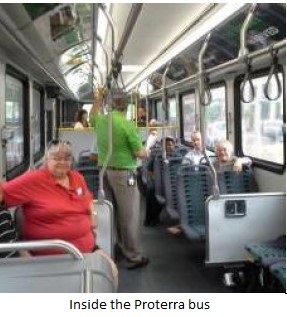

Buying a bus is a long-term investment. Madison Metro expects the average bus to last 12 to 15 years. After that repair and maintenance costs make replacement more economical. So when Metro purchases a bus today, it decides what Madisons bus fleet will look like in the next decade.
Before we ask what Madisons bus fleet will look like in the future, lets ask what it should look like.
Currently Madison has standard (diesel) buses and hybrid (electric and diesel) buses that both run on ultra-low
sulfur diesel fuel. About 10 percent of Metros bus fleet is hybrid buses. Other bus engine/fuel types include compressed natural gas and electric. There are a number of considerations in purchasing a bus type. Key elements include initial price, lifecycle cost and environmental cost.
Initial Price
Traditionally the federal government heavily subsidizes bus purchases. The federal match often covers 80% of a bus purchase with a local 20% match. While bus model prices vary, in ball park terms a standard 40-foot diesel bus has a price tag of around about $450,000 before the federal
match. Compressed natural gas (CNG) buses are in the range of $470,000. Hybrid (electric-diesel) buses are in the range of $650,000. Electric buses, which until recently ranged over a million dollars, have a href="http://www.slate.com/articles/technology/the_juice/2014/09/electric_buses_proterra_wants_to_rid_america_of_emission_spewing_buses.html">moved down in price and start around $800,000.
Lifecycle Costs
Beyond the purchase price there are lifecycle costs. These costs include variables such as fuel costs, maintenance costs, driver costs and infrastructure. Infrastructure includes not only storage but other variables such as fuel stations. Lifecycle calculations are complex and vary with bus model and type (diesel, hybrid fuel, electric, compressed natural gas, etc.), but generally speaking newer technologies often have lower maintenance costs, lower fuel costs (though this fluctuates) and lower environmental impacts than standard diesel buses. That is, their lifecycle costs are often lower than standard buses a tradeoff with their higher price tag.
Planning for the proposed Madison bus satellite garage allows for diesel, electric and compressed natural gas (CNG) buses. Maintenance and fueling for each bus type has infrastructure costs. Electric bus charging station infrastructure comes in two basic types (depending on the bus), with one version significantly more costly than the other. CNG fueling stations are also not one size fits all and costs can be substantial.
Environmental Costs

In the face of global warming and other pollution concerns phasing out fossil fuels like diesel is critical. Madison Metros use of low sulfur diesel in its current fleet is an improvement, but still not optimal. Compressed natural gas (CNG) is often viewed as a bridge fuel with lower green house gas emissions than other fossil fuels. However, CNG suffers from production problems that include surface and ground water pollution, extraction processes that cause earthquakes, and substantial green house gas emissions from methane. These production problems may entirely cancel CNGs
tailpipe emissions advantage over diesel fuel.
So what about electric? Some areas of the country use hydroelectric or other renewable electric energy sources (e.g. solar and wind). Many others use low emission nuclear energy. However, much of the electricity in Midwestern states, Wisconsin in particular, comes from burning coal. Coal, a fossil fuel, can make Madison Metros use of local electricity more environmentally polluting than if alternative renewable energy sources were used.
Madison Metro participates in Madison Gas and Electrics Green Power Tomorrow program . The program delivers electricity from renewable sources. Whether or not Metro would purchase renewable electricity for electric buses would need to be determined. Purchasing renewable electric power would offset some of the fuel cost savings. However, as federal mandates require cleaner coal power and global warming imperatives restrict fossil fuels, increasing alternative electrical generation will become inevitable. As it does, the lifecycle cost case for Madison Metros electrical use will most likely only improve.
The Future is Electric
As Madison Metro considers adding to its fleet in the coming years it should look longterm. Other peer bus authorities, like Seattles King County Metro (KCM) have started testing electric buses in their fleets. Indianapoliss IndyGo is about three-quarters the size of Madison Metros fleet (about 155 versus 214 buses). IndyGo will expand their fleet this year with 21 electric buses. The expansion will make IndyGo the largest electric bus fleet in the country. Electric buses offer the promise of lower overall lifecycle and environmental costs that can offset their higher initial
price tag. Madison Metro should investigate whether our fleet would benefit from electric bus lifecycle and environmental savings.
In 2007 Metro Transit bought 5 hybrid-electric buses-the first purchase of hybrid-electric buses in Wisconsin. It was a wise, forward-looking choice. Recently Mayor Paul Soglin wrote about the benefits of an electric bus demonstrated to Madison Metro employees. As we approach the 10th anniversary of Metro introducing Wisconsin to hybrid-electric
buses, it may be time to take the lead again. In the not too distant future the buses to integrate into Metros fleet will be all-electric.
Hiram Wurf is a Board Member of the Madison Area Bus Advocates. The opinions expressed here are those of the author.
 Madison Area Bus Advocates
Madison Area Bus Advocates